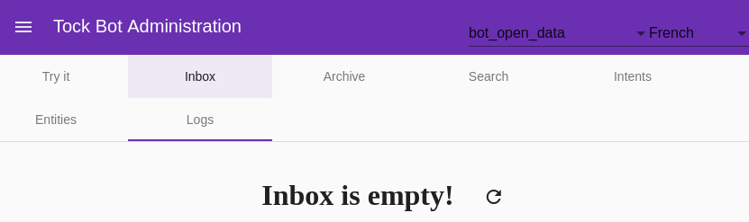
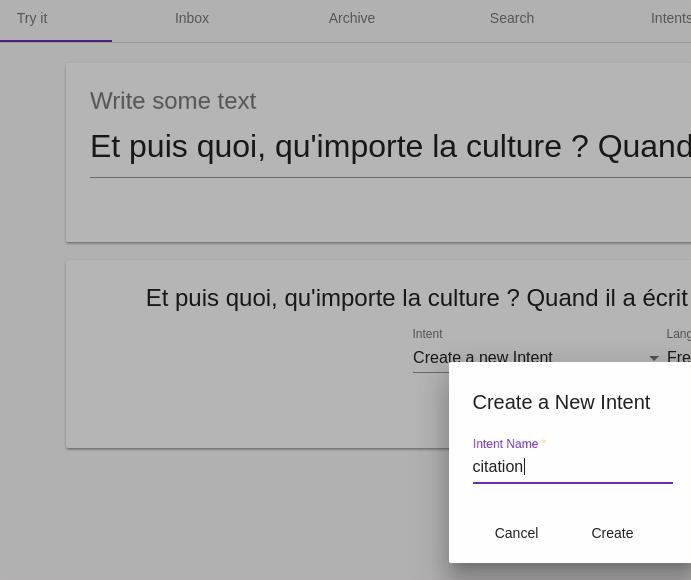
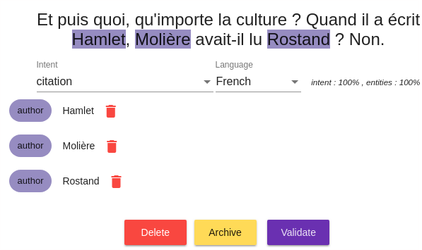
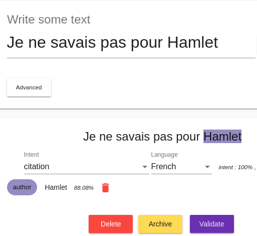
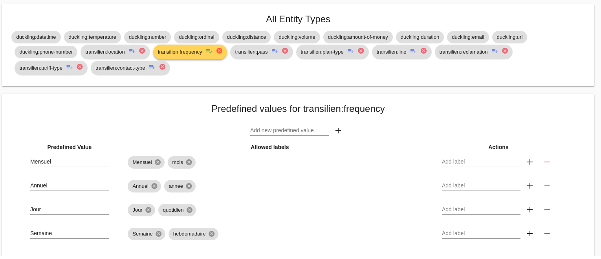

Building conversational models
The Tock Studio documentation can be browsed screen by screen, including the Language Understanding and Model Quality menus for managing conversational models. Feel free to refer to it if you have a question about a particular tab/option.
This page presents the construction of models by focusing more on usage and learning, allowing you to move from one screen to another without exhaustively detailing each feature of the platform.
Note that it is possible to deploy the Tock NLU platform alone, in this case the Tock graphical interfaces are limited to the Settings, Language Understanding and Model Quality menus. This page can therefore be used as a tutorial for a use of Tock restricted to Language Understanding, for example for a use such as the Internet of Things.
Go to the Language Understanding section
The Language Understanding menu returns to the Inbox tab by default. Initially, you have no sentences if no one has yet spoken to the bot:

Add and qualify sentences
Add a sentence
- Go to the New Sentence screen
- Enter a sentence
Create a new intent
- Assign a new intent to the sentence by selecting Create a New Intent in the Intent selection list.

Specify entities
Depending on what the intent is for, you can specify the entities you want your model to recognize in the sentence:
- Select a portion of the sentence corresponding to the entity (ie. a group of words to select with the mouse)
- Click on Add Entity that just appeared

- Choose an existing entity type or create a new one
- Give a role to this entity
Example: in the sentence "I want to go from Paris to New York", probably Paris and New York are two entities of the same type (locality) but do not have the same role in the intent (origin and destination).
It is of course possible to have multiple occurrences of the same role, or a different role in the same sentence.

Take advantage of predefined entities
By default, Tock offers a number of predefined entity types, including the types supported by the Duckling library: amounts, dates, etc. If you select these entity types, they will be automatically recognized and valued.

Validate the sentence
When the intent and entities are correct, complete the qualification of the sentence by clicking on Validate.
Qualify other sentences
After two or three sentences for a given intention, it is common for the model to start recognizing the following sentences and detecting the intention well (with an increasing score, as long as the sentences are relatively close / related to the intention of course):

If a sentence is not well qualified, change the intention / entities then do Validate to apply the correction. If the sentence was well qualified, do Validate directly.
In both cases, you feed the model, which rebuilds itself, and becomes more relevant for the following sentences.
You are building your conversational model!
This is the beginning of learning for your bot or conversational application.
The qualification of sentences, their number but also their variety (especially over time, because today's users are not exactly tomorrow's users) are the basis of a relevant model and a good conversational experience for users.
Browse the model's sentences
The Search tab allows you to browse all the model's sentences using a certain number of criteria. The most used is the simple text search for which it is also possible to use regular expressions.

Each sentence has a Status that can change over time:
- Inbox : The sentence has not yet been qualified and is not part of the model
- Validated : The sentence has been validated but is not yet taken into account in the NLP models (this can take time in the case of large models)
- Included in model : The sentence has been validated and has been taken into account in the NLP models
This screen therefore allows you to consult the sentences that are already part of the model (in other words already qualified), and to change the sentence qualifications over time. It is notably possible to re-qualify an entire group of sentences.
For example, you can create a new intention later and decide that all sentences meeting a certain criterion (keyword or other) must now be qualified in this new intention.
Edit the advanced features of the application
The Applications menu gives access to the list of applications/bots available on the platform:

With the edit button, several options are available, in particular:
NLU engine selection
You have the possibility to select the NLU library used by this bot (provided that several engines are present in the platform installation).
Enable entity templates

This option allows you to reuse pre-built entity templates in your new intentions.
For example, if you create an intention with a duckling:datetime entity,
dates will be automatically recognized for this intention in all new sentences assigned to this
intention.
Internally, an arbitration is made between the information coming from the pre-built entity models and the information taken from your own model.
This option is enabled by default. It may be useful to disable it for very large models, for which native detection will be superior in almost all cases to that of the entity models.
Enabling subentities
If you enable this option, you will be able to qualify several levels of entities:

The number of levels is not limited, but it is recommended not to specify more than 3 or 4.
Predefined entity values
A given entity can have predefined values. To do this, you must go to the Entities tab, select an entity. The icon next to the delete icon shows the types of entities you can edit:

In the example above, two labels are defined for the week value:
- Week
- weekly
Continue...
To learn more about entity management, especially in programmatically created intentions, or simply to continue browsing the Tock user manual, you can go to the Development chapter.